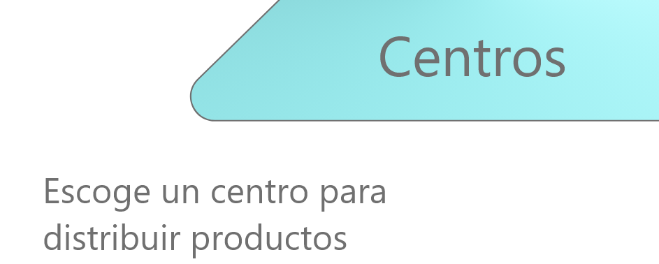

<ion-item *ngFor="let center of listcenters">

    <ion-button (click)="this.prueba(center.idcen)" size="large" color="dark" expand="block" fill="outline" ><ion-icon style="color:#02c6d4"  name="planet"></ion-icon>{{center.strnomcen}}</ion-button>

  </ion-item>

    <!-- fab placed to the top end -->
    <ion-fab vertical="bottom" horizontal="bottom" slot="fixed">
      <ion-fab-button [routerLink]="['../crear-centro']" class="ionfabAdd" color="light" >
        <ion-icon  class="ionfabAdd" style="color:#005851"  name="add" ></ion-icon>
      </ion-fab-button>
    </ion-fab>

    <!-- ion-fab-button -->
<ion-content>
  <ion-fab vertical="bottom" horizontal="start" edge slot="fixed">

    <ion-fab-button class="ionfab" color="light" ion-button full icon-only>
      <ion-icon style="color:#005851" name="grid-outline"></ion-icon>
    </ion-fab-button>

    <ion-fab-list side="top">
      <ion-fab-button class="ionfabHome" [routerLink]="['../home']"><ion-icon style="color:#005851"  name="home-outline"></ion-icon></ion-fab-button>
    </ion-fab-list>
 

  <ion-fab-list side="top">
    <ion-fab-button class="ionfabCenter"  [routerLink]="['../centros']"><ion-icon style="color:#005851"  name="cube-outline"></ion-icon></ion-fab-button>
  </ion-fab-list>

<ion-fab-list side="top">
  <ion-fab-button class="ionfabRandom" [routerLink]="['../devoluciones']"><ion-icon style="color:#005851"  name="shuffle-outline"></ion-icon></ion-fab-button>
</ion-fab-list>

  </ion-fab>
</ion-content>